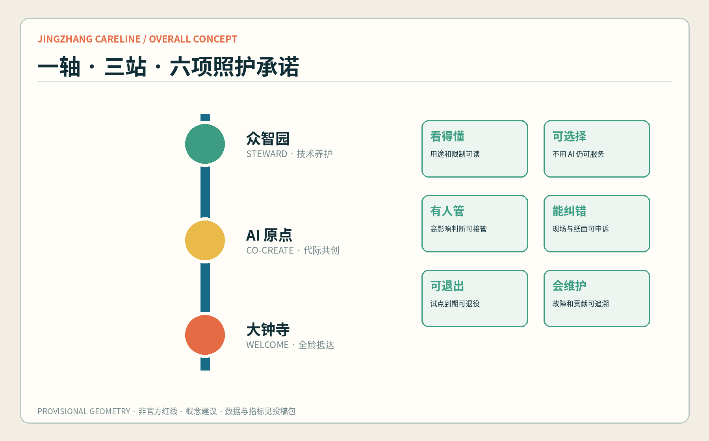
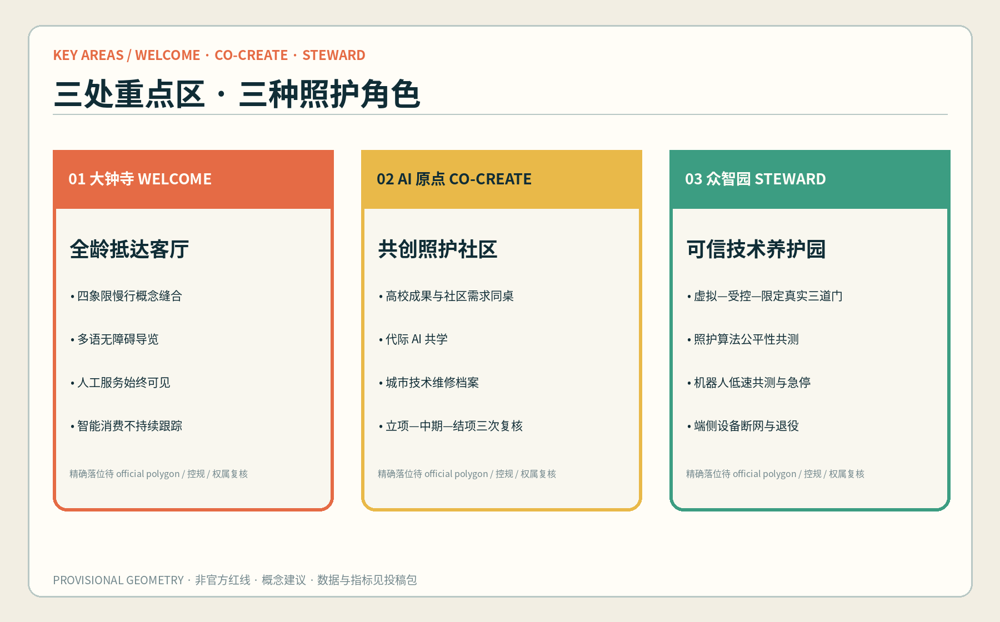
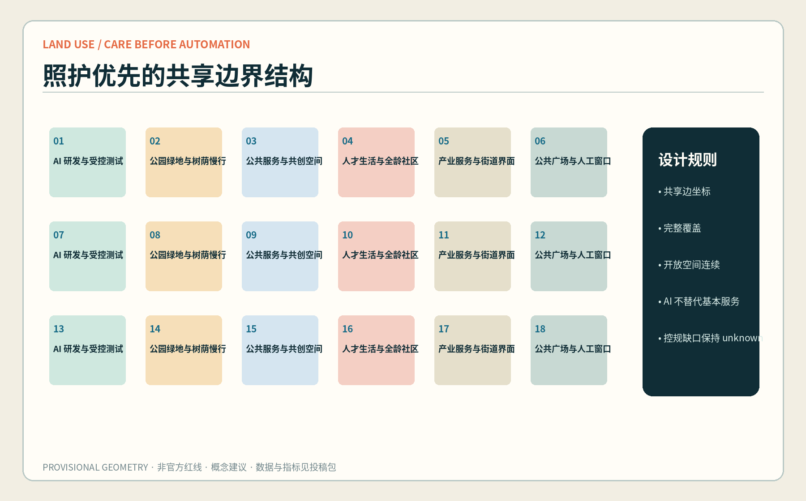
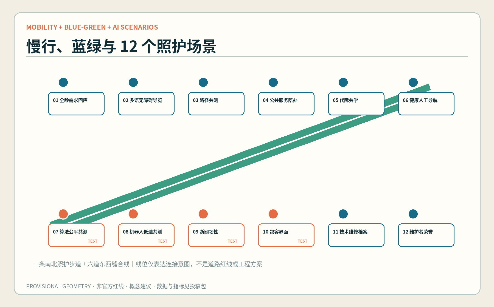
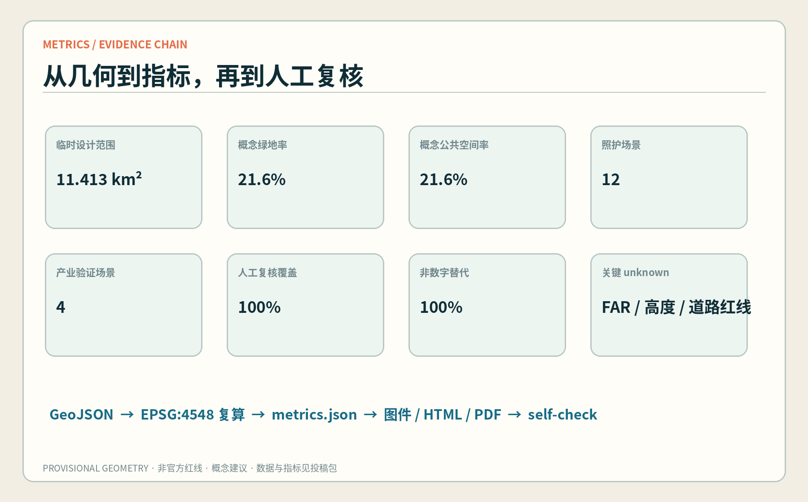

一条可步行的公共照护链
大钟寺 WELCOME 提出城市照护议题，AI 原点 CO-CREATE 共同转译，众智园 STEWARD 受控验证；失败与改进再沿同一条链返回城市生活。

三层范围，共用一套照护协议
43.6 km²｜统筹研究
治理协议、AI 生态接口、三区两翼协同与国际机制案例。
约 11.4 km²｜总体设计
空间网络、概念用地、容量测试、慢行与蓝绿公共界面。
约 368.4 ha｜重点区域
三类进入城市的门槛：提出问题、共同转译、受控验证。
替换规则
official polygons 到位后整体重做 geometry、metrics、figures、HTML 与 PDF。
三处重点区，三种责任
全龄抵达客厅
城市需求、国际交流、智能原生消费；全龄需求回应台、多语导览、权利说明。
共创照护社区
高校成果、社区知识与可逆原型；共学桌、失败档案、能纠错窗口。
可信技术养护园
模型、机器人、端侧设备与安全治理；受控沙盒、红队评测、贡献标尺。

用地分区：研发、生活与公共判断并置
18 个共享边界单元完整覆盖临时 site。用地代码采用项目登记的国土空间分类子集，只作概念功能测试，不是现状认定或法定图则。

交通慢行：先走查，再画线
一条南北照护步道与六道东西缝合线只表达连接意图。大钟寺四象限、五道口/清华东路西口和跨环节点，均待客流、断面、出入口、无障碍、市政和安全资料有人管。
步行优先骑行连续轨道接驳现场疏导非工程线位
蓝绿公共空间：日常、生态、见证叠合
绿色空间承担慢行、树荫、雨洪和日常活动；三处照护共创场承担说明、评议、能纠错和结项。四处低体量地标记录城市照护议题、失败、验证与维护贡献。

建筑：先做容量测试，不抢做拆改留结论
概念基底
由非开放空间单元内缩生成，证明容量图层可复算，不表示现实建筑。
逐栋深化门槛
现状测绘、年代、用途、权属、结构、消防、文保、日照、碳与利益相关者意见。
更新项目：按风险学习，不按建设冲量
数据底板
official 数据入库
可逆原型
90 天低成本试用
共同评议
居民与使用者有人管
受控验证
正负结果可读
扩大 / 可退出
知识归档、设备退役
12 张场景卡，4 个产业验证场景
指标不是结论，是可重算的承诺

任务覆盖
公告 1.3 / 1.4 / 1.5
产业生态、未来城市形态、人才城区、三层范围、城市更新、交通市政、遗址公园、风貌与三重点区均映射至章节、图层、指标与图纸。
agent.1—agent.6
命名/Logo、7 个全球机制案例、12 张场景卡、6 类画像、4 个朝圣节点、文化叙事与年度运营闭环完整覆盖。
自检状态
用地完整覆盖、图层在 site 内、指标同源复算、HTML 离线、五图与 PDF 已生成；最终状态以仓库自检命令输出为准。
official boundary、key areas、控规、道路、现状建筑、文保、市政和权属资料缺失；不阻断内容审查，但限制精确判断。
来源
- 官方公告：确认项目、三层范围文字与约面积、任务和成果语境；不提供精确 polygon。
- 清权 Agent 任务书：确认共创原则、六项任务、品牌、场景、运营与边界条款。
- 住建部城市设计/控规办法、自然资源部分类指南：限定专业表达，不证明项目已批控规。
- NIST、EU TEF/JRC、Punggol、Barcelona、Helsinki、UK AISI：仅归纳公开机制，不移植制度或形象。
- 完整发布者、URL、访问日期、允许与禁止用途见
sources.json。
假设与待补资料
- 临时 site 与三重点区只用于生成、展示与包内复算；official polygons 到位后整体替换。
- 概念建筑基底不是现状建筑；拆改留须逐栋调查和利益相关者有人管。
- 慢行线不是道路红线或工程线位；需交通、无障碍、市政与安全联合深化。
- 分期不是政府时序、投资或审批承诺；运营主体、预算和许可均待协商。
- 地标精确落位须待文保、绿线、蓝线、交通安全与权属资料确认。